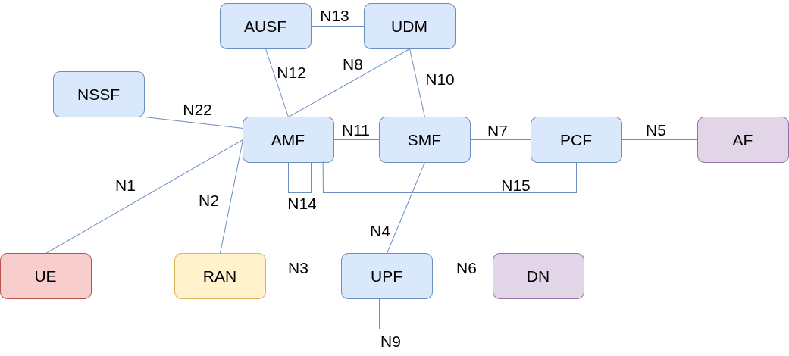
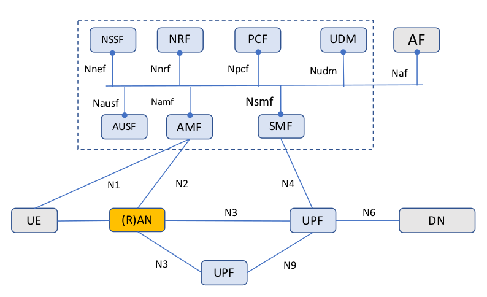
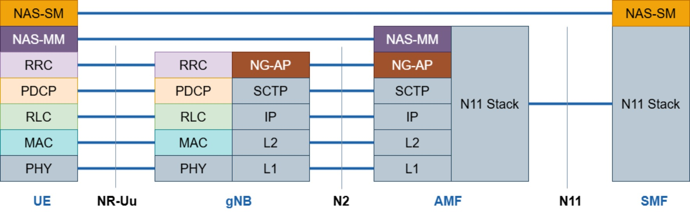
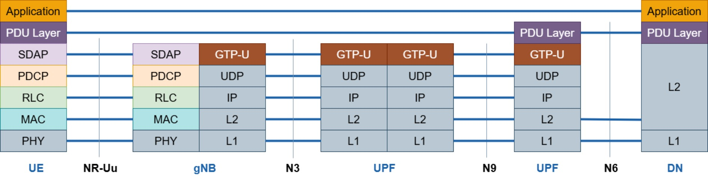

5G Core Network & OAI Hands-on
OAI 5G NR Workshop — IIT Tirupati
March 13, 2026 | Afternoon Session
Afternoon Session — Agenda
| 0 |
Setup: Clone repos and install utils |
| 1 |
5G Core Architecture & protocol stack |
| 2 |
Deploying OAI 5G core |
| 3 |
OAI deployment modes, building RAN, end-to-end 5G network |
| 4 |
Understanding what happened: NAS, Registration, Authentication |
| 5 |
Wireshark analysis & Configuration deep-dive |
Goal: By the end of this session,
- You will have a working end-to-end 5G network
- Understand the initial protocol messages exchanged from UE power-on to internet access
What You Need
- Laptop with Ubuntu 22.04 or 24.04 (native or VM), Internet access
If you haven’t set these up yet, lets setup.
1. Git
sudo apt-get update
sudo apt-get install git
2. Wireshark
❗ Make sure to select yes when the Wireshark installation asks you whether non-superusers should be able to capture packets. Otherwise, you will have to run in sudo mode.
sudo add-apt-repository ppa:wireshark-dev/stable
sudo apt update
sudo apt install -y git net-tools wireshark
3. Networking
sudo apt install -y iperf3
What You Need
4. Docker
sudo apt install -y apt-transport-https ca-certificates curl software-properties-common
curl -fsSL https://download.docker.com/linux/ubuntu/gpg | sudo apt-key add -
sudo add-apt-repository "deb [arch=amd64] https://download.docker.com/linux/ubuntu $(lsb_release -cs) stable"
sudo apt update
sudo apt install -y docker docker-ce
❗ Add your username to the docker group, otherwise you will have to run in sudo mode.
sudo usermod -a -G docker $(whoami)
❗ Now, close the terminal tab and re-open it.
Clone the Workshop Repository
# Clone the workshop repo
cd ~
git clone https://github.com/RajeevGa/iittp-oai-hands-on.git
cd iittp-oai-hands-on
This repo contains configs, scripts, pcap traces, and these slides.
5G Architecture
The 5G system has three main parts:
- UE — your phone or device
- gNB — the base station
- 5G Core — the brain that manages connections, sessions, and data routing
5G Core Network Architecture
- 5G core design choices
- Dividing monolithic element into smaller Network Functions (NFs)
- Service-based architecture is based on a set of NFs
- Virtualization
- NFs communicate over a common bus via APIs.
- Each NF registers with the NRF and can discover/consume services from other NFs dynamically
| AMF |
Access & Mobility Management |
Registration, authentication relay, mobility |
| SMF |
Session Management |
PDU session setup, IP allocation, QoS |
| UPF |
User Plane Function |
Packet routing, forwarding, data path |
| AUSF |
Authentication Server |
Handles 5G-AKA authentication |
| UDM |
Unified Data Management |
Subscriber data, credentials |
| NRF |
Network Repository Function |
NF discovery — the “phonebook” |
| NSSF |
Network Slice Selection |
Selects the right network slice |
| PCF |
Policy Control |
Policy and charging rules |


5G Protocol Stack
- Control Plane
- Non-Access Stratum (NAS): Functional layer to exchange control plane messages between UE and CN
- Signaling - Who is the user? Is she/he/it a valid one? where should the user data should go? How to handle Roaming?
- Establishment and management of communication sessions (NAS-SM)
- Mobility management (NAS-MM)
- Example NAS messages: UE attach and registration, authentication etc.
- AMF handles control signaling with the UE and RAN
- User Plane
- Access Stratum (AS)
- SMF programs the UPF
- UPF just forwards packets — it’s told what to do by the SMF
- Actual data packets Ex: YouTube video, Arattai


End-to-end 5G system — UE connects through RAN to Core Network and onward to the Internet
- NR-Uu: Radio interface (UE ↔︎ gNB) — RRC carries NAS messages - N2: gNB ↔︎ AMF — NGAP over SCTP - N11: AMF ↔︎ SMF — HTTP/2 (Service-Based Interface)
Installing OAI 5G Core
cd ~/iittp-oai-hands-on/cn
If you dont have a docker account, create a docker account in docker signup
Login to docker
docker login -u <username>
Enter your password
Deploying OAI 5G core
- Now, pull the 5G core docker images
docker compose -f docker-compose.yaml up -d
watch status of the core network
watch docker compose -f docker-compose.yaml ps -a
All the docker containers should be healthy
- Important files: MySQL database stores the subscriber data, yaml file is contains details of all NFs
- Some useful commands
- docker ps -a
- docker logs oai-amf -f
- docker logs oai-smf -f
Why RFsimulator?

RFsim is perfect for learning and protocol development because:
- No hardware needed — runs on any laptop
- Reproducible — no RF interference or hardware quirks
- All signaling is real — NAS, NGAP, PFCP, GTP-U messages are identical to a live network
- Wireshark works — you can capture and analyze every protocol message
- Fast iteration — change config, restart, test in seconds
For this workshop: We use rfsim so everyone can participate with just a laptop.
In the lab: We will also show a live over-the-air demo with real SDR hardware!
Installing OAI gNB & UE
Open a new terminal and clone the ran repository
git clone https://gitlab.eurecom.fr/oai/openairinterface5g.git
compile the gNB and nrUE
cd openairinterface5g/
git checkout 2024.w46
source oaienv
cd cmake_targets/
./build_oai -I
./build_oai -w SIMU --gNB --nrUE --ninja
Launch gNB
cd ~/openairinterface5g/cmake_targets/ran_build/build
sudo -E ./nr-softmodem --rfsim \
-O ~/iittp-oai-hands-on/ran/conf/gnb.sa.band78.106prb.rfsim.conf
Watch for in the logs:
[NGAP] Send NGSetupRequest to AMF
[NGAP] Received NGSetupResponse from AMF
[GNB_APP] [gNB 0] Received NGAP_REGISTER_GNB_CNF: associated AMF 1
This means gNB has successfully connected to the 5G Core!
Launch nrUE
In another terminal:
cd ~/openairinterface5g/cmake_targets/ran_build/build
sudo -E ./nr-uesoftmodem -r 106 --numerology 1 --band 78 \
-C 3619200000 --rfsim --ssb 516 \
-O ~/iittp-oai-hands-on/ran/conf/ue.conf
Watch the logs for these milestones:
[NR_RRC] State = NR_RRC_CONNECTED
[NAS] [UE] Received REGISTRATION ACCEPT message
[OIP] Interface oaitun_ue1 successfully configured, IPv4 10.0.0.x
🎉 Your UE is connected to the 5G network!
Verify End-to-End Connectivity
gNB logs — check for:
[NR_MAC] UE RNTI b010: Received Ack of Msg4. CBRA procedure succeeded!
[NR_RRC] Received RRCSetupComplete (RRC_CONNECTED reached)
[NR_RRC] Received Security Mode Complete
[NR_RRC] NGAP_PDUSESSION_SETUP_RESP: sending the message
nrUE — check interface is up:
You should see an IP address like 10.0.0.x
Ping Test
# From UE to the external data network container
ping -I oaitun_ue1 192.168.70.135
# From the container to the UE (downlink)
docker exec -it oai-ext-dn ping
The IP address 192.168.70.135 is the IP address of the oai-ext-dn container.
iperf Test
Start iperf3 server inside the external data network container:
docker exec -it oai-ext-dn bash
iperf3 -s
On the host in a new terminal, run iperf3 client bound to the UE IP:
# Downlink test
iperf3 -B -c 192.168.70.135 -u -b 50M -R
# Uplink test
iperf3 -B -c 192.168.70.135 -u -b 20M
🎉 Congratulations — you have a working end-to-end 5G network!
Now let’s understand what just happened under the hood…
What Just Happened?
The 5G Standalone Call Flow

When you launched the nrUE, all of this happened automatically. Let’s break it down.
Key Configuration Files
Before we look at the signaling, let’s understand what parameters you configured:
5G Core: ~/ieee_ants2024_oai_tutorial/cn/conf/config.yaml
gNB: ~/ieee_ants2024_oai_tutorial/ran/conf/gnb.sa.band78.106prb.rfsim.conf
nrUE: ~/ieee_ants2024_oai_tutorial/ran/conf/ue.conf

These parameters must match between UE, gNB, and Core: MCC, MNC, SST, SD, SUPI, Key, OPc, DNN
UE Identifiers — Who Are You?
The 5G system uses multiple identifiers for the UE:
| SUPI |
Subscription Permanent Identifier (like IMSI) |
Stored in SIM & UDM. Never sent in clear. |
| SUCI |
Subscription Concealed Identifier |
Encrypted SUPI — sent during first registration |
| 5G-GUTI |
Globally Unique Temporary ID |
Assigned by AMF after registration — used afterwards |
Privacy improvement over 4G: In 5G, the permanent identity (SUPI) is never sent over the air in plaintext. The UE encrypts it into a SUCI using the home network’s public key.
SUPI format: MCC (3 digits) + MNC (2–3 digits) + MSIN (up to 10 digits)
Example: 208950000000031 → MCC=208, MNC=95, MSIN=0000000031
Look at your ue.conf — can you find the IMSI? That’s the SUPI!
Registration Flow — The Big Picture
sequenceDiagram
participant UE
participant gNB
participant AMF
participant AUSF
participant UDM
Note over UE,gNB: Radio connection established (RRC)
UE->>gNB: Registration Request (SUCI)
gNB->>AMF: NGAP Initial UE Message (Registration Request)
Note over AMF: AMF selects AUSF
AMF->>AUSF: Authentication Request (SUCI)
AUSF->>UDM: Get Auth Vectors (SUCI)
UDM-->>AUSF: Auth Vector (RAND, AUTN, XRES*)
AUSF-->>AMF: Auth Response (RAND, AUTN, HXRES*)
AMF->>UE: Authentication Request (RAND, AUTN)
UE-->>AMF: Authentication Response (RES*)
Note over AMF: Compare HRES* with HXRES*
AMF->>AUSF: Verify RES*
Note over AUSF: Compare RES* with XRES*
AUSF-->>AMF: Authentication Success
AMF->>UE: Security Mode Command
UE-->>AMF: Security Mode Complete
AMF->>UE: Registration Accept (5G-GUTI)
UE-->>AMF: Registration Complete
This is what happened when you launched the nrUE. Let’s break it down step by step.
Step 1: Registration Request
UE → gNB → AMF
- UE creates a NAS Registration Request containing its SUCI
- This NAS message is wrapped inside RRC (radio) and delivered to gNB
- gNB wraps it in NGAP (N2) and forwards to AMF
- AMF receives the SUCI and now needs to authenticate the UE
Remember: In RFsim mode, the radio part is simulated, but the NAS and NGAP messages are real — exactly what you’d see on a live network.
Step 2: 5G-AKA Authentication
sequenceDiagram
participant UE
participant AMF
participant AUSF
participant UDM
Note over UDM: Has K, OP/OPc for this SUPI
Note over UE: SIM has K, OP/OPc
UDM->>UDM: Generate RAND, compute AUTN, XRES, XRES*
UDM-->>AUSF: 5G HE Auth Vector (RAND, AUTN, XRES*)
AUSF->>AUSF: Compute HXRES* from XRES*
AUSF-->>AMF: 5G SE Auth Vector (RAND, AUTN, HXRES*)
AMF-->>UE: Auth Request (RAND, AUTN)
UE->>UE: Verify AUTN (check MAC), compute RES*
UE-->>AMF: Auth Response (RES*)
AMF->>AMF: Compute HRES*, compare with HXRES*
AMF->>AUSF: Verify (RES*)
AUSF->>AUSF: Compare RES* with XRES*
AUSF-->>AMF: Success + Kseaf
Mutual authentication: The UE verifies the network (via AUTN) AND the network verifies the UE (via RES*). Neither side trusts the other blindly.
Pre-shared secrets: Both UE (SIM) and UDM know K (secret key) and OP/OPc. These are the key and opc fields in your ue.conf and the CN database!
Step 3: Security Mode & Registration Accept
After successful authentication:
- AMF → UE: Security Mode Command
- Tells UE which encryption and integrity algorithms to use
- From this point, all NAS messages are encrypted
- UE → AMF: Security Mode Complete
- UE confirms it can encrypt/decrypt
- AMF → UE: Registration Accept
- AMF assigns a 5G-GUTI (temporary ID)
- UE is now registered on the network
- UE → AMF: Registration Complete
After this, the UE has a signaling connection. The network then sets up a PDU Session to create the data path — that’s how your UE got the IP address and could ping. We’ll cover PDU sessions in detail tomorrow.
Wireshark Analysis
Capture Traces
Let’s capture the signaling. Stop your gNB and UE if running, then:
# Start tcpdump to capture on the CN bridge interface
sudo tcpdump -i oai-cn5g -w monolithic.pcap
Now restart the gNB and UE (same commands as before). Let the UE connect fully, do a ping, then stop tcpdump with Ctrl+C.
Open the capture:
wireshark monolithic.pcap &
Display filter:
ngap || nas-5gs || pfcp || gtp
Find the Registration Messages
In Wireshark, you should see these messages. Find each one:
| 1 |
gNB → AMF |
NGAP: InitialUEMessage |
Contains NAS Registration Request with SUCI |
| 2 |
AMF → gNB → UE |
NAS: Authentication Request |
Contains RAND and AUTN |
| 3 |
UE → gNB → AMF |
NAS: Authentication Response |
Contains RES* |
| 4 |
AMF → UE |
NAS: Security Mode Command |
Encryption algorithm selected |
| 5 |
UE → AMF |
NAS: Security Mode Complete |
|
| 6 |
AMF → UE |
NAS: Registration Accept |
Contains the assigned 5G-GUTI |
Click on each message and expand the NAS layer to see the actual field values.
Discuss: What Did You See?
Let’s compare what Wireshark shows with the theory:
Find the SUCI in the Registration Request — can you see the MCC/MNC? Is the MSIN in clear text or concealed? Compare with your ue.conf
Find RAND and AUTN in the Authentication Request — these are the challenge from the network
Find RES* in the Authentication Response — this is the UE’s proof of identity
After Security Mode Command — are subsequent NAS messages encrypted? How can you tell?
Find the 5G-GUTI in the Registration Accept — this is the temporary ID the UE will use from now on
Experiment: What if the UE is Unknown?
Let’s see what happens when authentication fails:
Change the SUPI in ue.conf to a value not in the CN database
Restart the nrUE
Watch the AMF logs:
Check Wireshark — do you see a Registration Reject?
Try also: Change the key or opc in ue.conf (keep SUPI correct). What happens now? The UE is known but authentication fails — different error!
Most Common Errors
| NGAP Setup Failure |
MCC/MNC mismatch between gNB and CN |
gNB config vs CN config.yaml |
| Unidentified/Illegal UE |
SUPI not in CN database |
CN database (oai_db.sql) |
| Authentication Failure |
Key or OPc mismatch |
ue.conf vs CN database |
| PDU Session Reject |
DNN or SST mismatch |
ue.conf vs CN config |
Debug tools: Wireshark traces + docker logs oai-amf -f + docker logs oai-smf -f
Summary
What We Covered Today
Deployed a 5G Network
- OAI 5G Core (docker) + gNB + nrUE in rfsim mode
- End-to-end connectivity: ping and iperf
Understood What Happened
- 5G Core architecture: SBA, NFs, what each does
- UE identifiers: SUPI, SUCI, 5G-GUTI
- Registration and 5G-AKA authentication flow
- Analyzed real signaling messages in Wireshark
- Mapped config file parameters to protocol messages
What’s Coming Tomorrow — Day 2
PDU Session & Data Plane (picking up where we left)
- How the UE gets its IP address (PDU session establishment)
- PFCP: how SMF programs the UPF
- GTP-U tunneling: how your data actually flows
- QoS flows, 5QI, DRB mapping
5G NR Radio Access Network
- Physical layer: OFDM, numerology, resource grid
- Channels: PDSCH, PUSCH, PDCCH, PUCCH, PRACH
- MAC scheduling, CQI, MCS
- RAN hands-on with OAI
Keep Your Setup Running!
For tomorrow, you’ll need the same environment.
# To gracefully stop today's session:
1. Stop nrUE: Ctrl+C in the nrUE terminal
2. Stop gNB: Ctrl+C in the gNB terminal
3. Stop CN:
cd ~/iittp-oai-hands-on/cn
idocker compose down # stop
Don’t delete the OAI build — we’ll use the same binaries tomorrow!
Thank You!
OAI Resources:
- OAI RAN:
https://gitlab.eurecom.fr/oai/openairinterface5g
- OAI CN5G:
https://gitlab.eurecom.fr/oai/cn5g/oai-cn5g
- OAI Documentation:
https://openairinterface.org/
Questions?
See you tomorrow for the data plane & RAN deep dive!